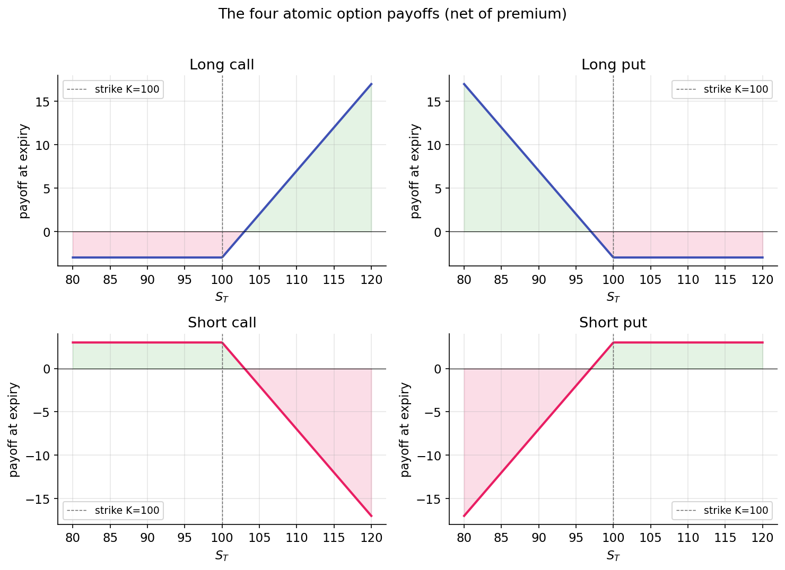

A promise you need not keep¶
There is a kind of contract that binds only one of the two who sign it. One may walk away. The other must stand there, whatever the weather.
We call it an option.
Definition¶
An option is a contract granting its holder the right — but not the obligation — to buy or sell a specific asset at a specific price by a specific date.
Four components:
| Term | Meaning |
|---|---|
| Underlying | The asset the contract references (a stock, ETF, index, or commodity). |
| Strike \(K\) | The agreed transaction price. |
| Expiry \(T\) | The date the right lapses. |
| Premium | The price the buyer pays the seller upfront for the contract. |
Two types:
- A call option conveys the right to buy the underlying at \(K\).
- A put option conveys the right to sell the underlying at \(K\).
Each contract has two sides: the holder (who paid the premium and owns the right) and the writer (who received the premium and assumes the obligation).
The holder can walk away. The writer cannot. This is the whole story.
The asymmetric right¶
A holder who owns the right to buy at \(K = \$100\) will:
- Exercise if the underlying is above \(\$100\) at expiry (buying at \(\$100\) and selling at market captures the spread).
- Decline to exercise if the underlying is below \(\$100\) (there is no reason to buy at \(\$100\) what the market offers at a lower price).
The holder's worst outcome is the forfeiture of the premium. The loss is bounded. The writer's best outcome is also the premium — kept in full if the holder declines to exercise. The writer's potential loss is not bounded.
One gives up a small, known thing. One takes on a small, known thing — and, should the weather turn, an unknown thing beside it.
A consequence: options always have non-negative value. The right to act, plus the right to decline, is worth at least zero. A deep-OTM contract near expiry may trade for a few cents but cannot trade at a negative price.
Payoff at expiry¶
At expiry, time value, implied volatility, and hedging considerations are no longer relevant. The payoff is mechanical.
Long call on an underlying trading at \(S_T\), struck at \(K\):
Long put:
Short call (written rather than purchased):
The loss is unbounded if the underlying rises. Naked short calls are among the highest-risk positions in standard options trading.
Short put:
The loss is bounded by \(K\) (a stock can reach zero but not go negative) but can be substantial.
Draw them. Payoff on the vertical. Terminal price on the horizontal. Four hockey sticks. Nothing else to remember, at the terminus.

Complex positions (spreads, straddles, butterflies) are sums and differences of these four shapes. The next lesson develops composites.
Intrinsic value and time value¶
Before expiry, an option trades at some premium \(P\). The premium decomposes:
Intrinsic value is the payoff from immediate exercise (ignoring premium paid). Positive for ITM options; zero for OTM or ATM options.
Time value reflects the possibility that the underlying may move favorably between now and expiry — the value of remaining optionality. It is largest for ATM options and collapses to zero at expiry, fastest in the final days. This decay has a name: theta, covered in Part III.
Time value is a kind of hope. It erodes, whether or not the world obliges.
A call 10% ITM with a month to expiry may trade at $11 when its intrinsic value is $10: $10 intrinsic plus $1 time value. Held to expiry with the underlying unchanged, time value collapses to zero; the option trades at $10.
Moneyness and leverage¶
"Moneyness" describes the position of the strike relative to the underlying:
- ITM (in the money): call with \(S > K\) or put with \(S < K\). Intrinsic value positive.
- ATM (at the money): \(S \approx K\). Maximum time value, maximum gamma (Part III).
- OTM (out of the money): call with \(S < K\) or put with \(S > K\). Intrinsic value zero; entire premium is time value.
OTM options trade at lower premiums because their payoff requires a meaningful move. A $2 OTM call on a $100 stock requires an approximately 10% move to finish ITM by expiry. If the move occurs, the position may appreciate substantially; if not, the premium is forfeited entirely.
A small bet on a large hope. This is why people buy them. It is also why, in aggregate, the sellers profit.
American and European, cash and physical¶
Two mechanical distinctions:
- American options permit exercise at any time before expiry. Single-name U.S. equity options (AAPL, TSLA) are American.
- European options permit exercise only at expiry. Cash-settled index options (SPX) are European.
European options are simpler to price: Black-Scholes produces a closed-form solution. American options introduce the optimal-exercise problem, which for calls on non-dividend-paying stocks is trivial (exercise is never optimal early). For puts and for calls on dividend-paying stocks, early exercise is occasionally optimal. The resulting pricing difference (American ≥ European at matched strike and expiry) is typically small.
Settlement determines whether the underlying is delivered physically or exchanged in cash. Single-name equity options settle physically; index options settle in cash.
Summary¶
Options pricing reduces to: given the underlying's price, volatility, time to expiry, and risk-free rate, what premium is consistent with the payoff at expiry? The payoffs above are the terminal condition. The remainder of Part II builds a consistent present price:
- Shapes, and the equation beneath them — the no-arbitrage equation linking calls, puts, stock, and cash.
- Three men, one formula — a closed-form premium under the GBM assumption from Part I.
By the end of this lesson:
- Every option has non-negative premium: the right to act plus the right to decline is worth at least zero.
- Deeper-OTM options have lower absolute premiums and higher leverage to moves that matter.
- Time value is concentrated near ATM and collapses fastest near expiry — the signature of theta.
Implemented at¶
The trading project does not price options from scratch; it consumes quoted premiums and uses them to compute Greeks via trading/packages/gex/src/gex/greeks.py. The contract mechanics described here are what those quotes represent.
A promise one may keep, or not. A door that stays open. Next: how doors fit together.